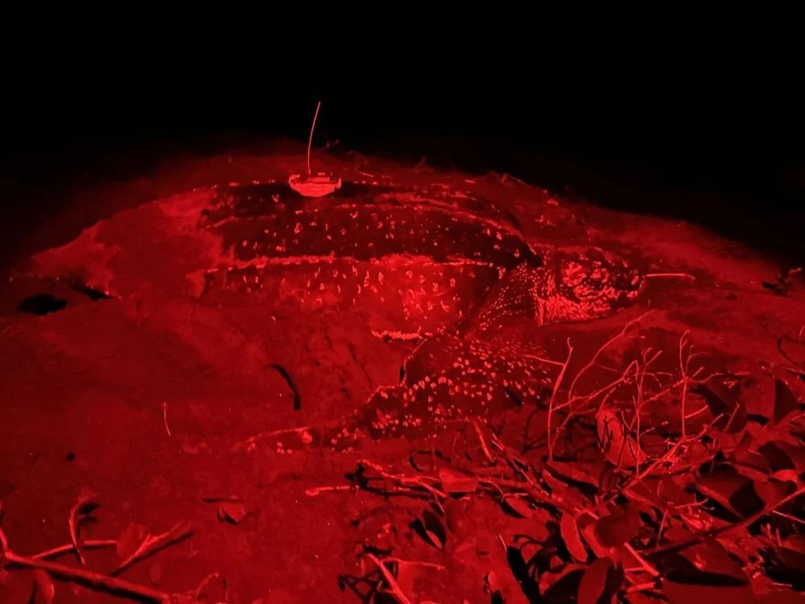

← Back to Meet Our Current Rescue
Luna the Leatherback Sea Turtle
Tour de Turtles 2026 · Sea Turtle Conservancy
Rescue Spotlight

Live Migration Map
Follow Luna’s route in real time on the official Sea Turtle Conservancy tracker.
View Luna on Sea Turtle ConservancyHer Story
Luna is an adult female leatherback sea turtle encountered nesting on May 10, 2026, on Soropta Beach, Panama. She measured 146.3 cm in curved carapace length and 104.6 cm curved carapace width. She laid 78 fertile eggs and 32 unfertilized eggs during her first documented nesting encounter on Soropta Beach in 2026.
Luna is taking part in the 2026 Tour de Turtles and was named by her sponsor, TURTLE. Through Sea Haven’s Adopt a Guardian program, we spotlight her journey so our community can connect conservation science with lasting ocean stewardship.
Photo Gallery
Additional field photos
Nesting and release moments
Rescue Footage
A dedicated rescue video for Luna will be added here as new field media becomes available.
Migration Snapshot
Migration statistics sourced from Sea Turtle Conservancy. Map and tracking data remain property of STC.